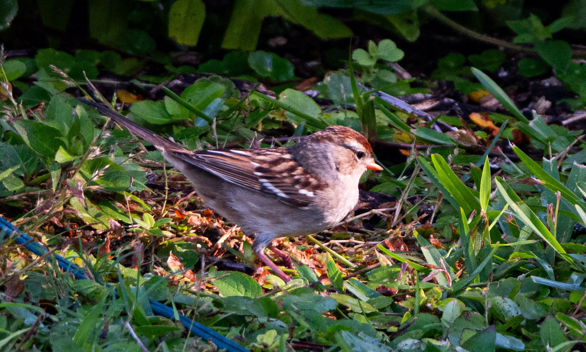

- Crisp and dapper, with bold Oreo-cookie black-and-white head stripes and a bright pinkish-yellow bill - unmistakable, though an uncommon find this far south.
- Not a local. These are winter visitors, dropping in after a long haul from breeding grounds way up in Canada and Alaska.
- Watch the feet: they do a funny backward double-hop on the ground, kicking away leaves to scratch up seeds like a little feathered wind-up toy.
- A brush-pile bird - look low, along weedy edges and thickets, not up in the trees.
Adults wear unmistakable high-contrast black-and-white head stripes. A bird with brown-and-tan stripes instead isn't a different species - it's a youngster on its first trip south.
Sits noticeably upright when alert, showing off a sleek, pearly-grey breast.
On the ground it feeds with the "double-scratch" - a quick two-footed backward hop that kicks leaves away to reveal hidden seeds. It's an inherited, instinctive move: even birds raised without leaf litter do it automatically.
A sweet, clear whistled song that opens with one or two long notes and ends in a buzzy trill. Even in winter you'll hear it practicing, along with a sharp chink call note from the bushes as birds keep track of one another.
Look low, not high. Scan brushy borders, overgrown fence lines, and low shrubbery near open grassy areas for an upright, boldly striped sparrow scratching in the leaf litter.
Mainly a seed-eater, especially here in winter: weed seeds, grass seeds, berries, and the odd bit of spilled birdseed. It does take insects too, mostly up north in the breeding season.
Look low, not high. Brushy borders, overgrown fence lines, and the low shrubbery near open grassy areas - classic edge habitat, not the canopy.
An uncommon winter visitor, generally here from about October to April. Early morning is best, scanning the brushy edges. Don't expect a guaranteed sighting - finding one is a small birding win. Gone by late spring.
Because they spend so much time on the ground, give them a little room so they don't feel cornered against a bush. Stay still and they'll usually carry on foraging while you watch.

- © Rob Carr (CC-BY-NC), via iNaturalist